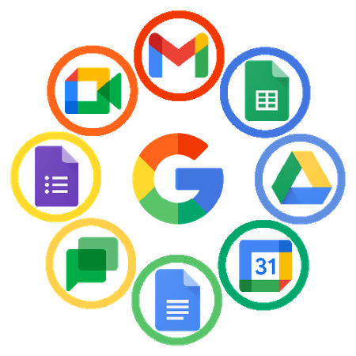
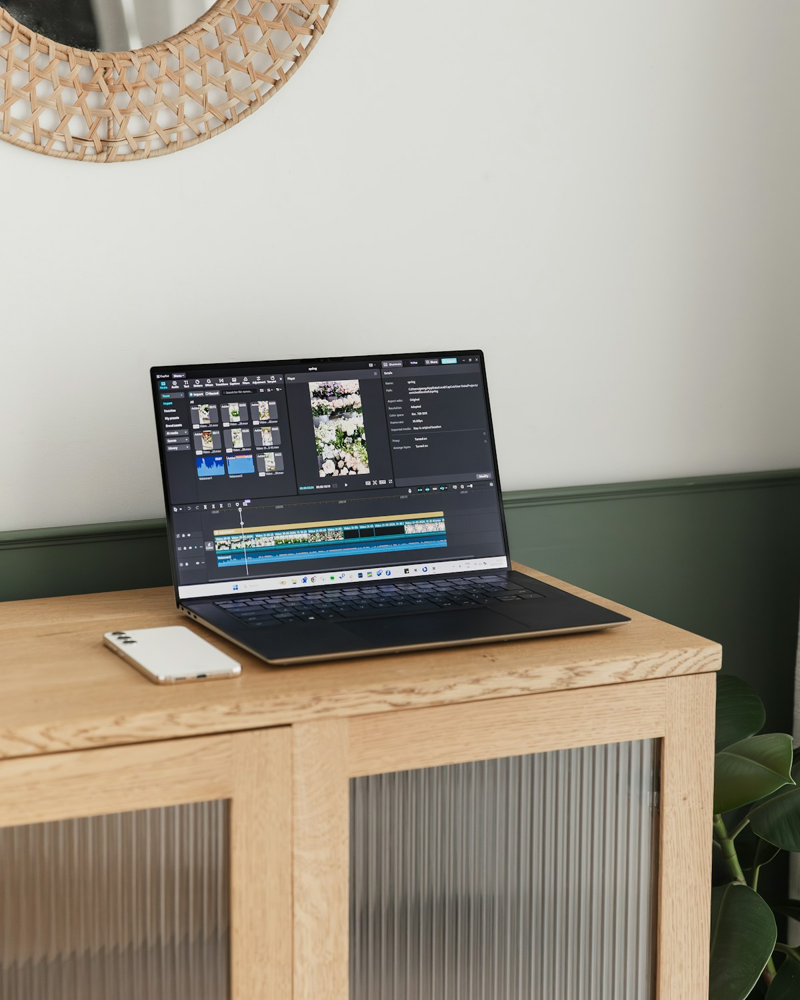

¿Niveles digitales muy distintos?
Conoce el nivel de cada docente y acompaña su aprendizaje paso a paso.
Capacitación digital para colegios
Acompañamos a tu equipo para que use herramientas digitales en sus clases, con confianza y de forma práctica.
Agendar reuniónUna conversación de 20 minutos, sin compromiso.
Aprendizaje práctico para el aula
Una capacitación pensada para tu colegio
Conoce el nivel de cada docente y acompaña su aprendizaje paso a paso.
El equipo practica con herramientas que el colegio ya tiene disponibles.
La propuesta contempla examen, informe y diploma para dar seguimiento al proceso.
Aprendizaje para el trabajo de cada día
Ideas prácticas para preparar clases, organizar tareas y crear materiales para el aula.
Planificaciones en Word, notas y asistencia en Excel, y presentaciones en PowerPoint.

Clases en Classroom, formularios de evaluación y archivos compartidos en Drive.

Material visual para clase, videos cortos y recursos para comunicar actividades.
Planifica más rápido y crea evaluaciones y materiales con inteligencia artificial, de forma ética.
Capacitación cercana y práctica
Acompañamos a los docentes con actividades que pueden llevar a sus clases y tareas de cada día.
Una opción para cada colegio
Conversemos para conocer lo que necesita tu colegio.
Respuestas claras
La propuesta contempla un mes. La duración final se confirma al conversar sobre las necesidades del colegio.
Office, Google Workspace, contenido y multimedia, e inteligencia artificial aplicada a tareas docentes.
Un diploma de participación y aprobación emitido por .
Hablemos de tu colegio
20 minutos para conocer tu colegio, sin compromiso.